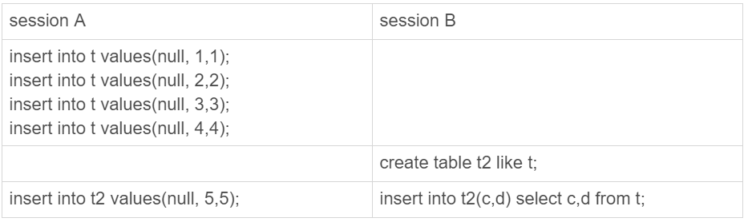

自增主键的原理
首先创建测试表
1 | CREATE TABLE `t` ( |
我们MySql的主键往往设置成auto_incrment
- 原理是什么呢？
- 为什么会有不连续的情况？
自增字值保存在哪里
不同的表引擎对于auto_incrment处理是不同的
- MyIsam表是保存在数据结构中
- Innodb表是保存在内存中的
- 5.7以及之前的版本是保存在内存中，每次数据库启动时候会查找表的max(id)，然后+1。如果这时候有auto_incrment=11,id=10,如果这条id=10的数据被删除后从起mysql，Auto_incrment的值又变成10
- 在Mysql 8.0中auto_incrment的值保存在redolog中，依靠redolog来恢复
自增值的修改方式
如果一个值被设置为auto_incrment，当一条插入语句时候
- 如果这个值是null或者0，会把当前的auto_incrment值设置进去
- 如果手动设置了值，就是用设置的值
这时候auto_incrment的变化如下，插入值是X，auto_incrment的值是Y，
- 如果X < Y，自增值不变
- 如果X ≥ Y，自增值变为新的自增值，计算方法是：当前的auto_incrment_offset+auto_incrment_increment知道比X大。
自增值的修改时机来看为什么自增值不连续
1 | # 1 |
主要看第2条语句的执行流程
- Innodb调用引擎写入一条数据(null, 1, 1)
- 因为id是null所以获取当前的auto_incrment，现在是2
- 改变auto_incrment，变为3
- 这时候插入（2,1,1）;
- 所以C冲突插入失败
- 语句结束
可以看到这时候auto_incrment是没有变回2。原因是，因为有可能这时候并发写入，如果回滚了后续的写入都会报主键冲突，同理事物的回滚也类似。
自增锁的优化
为了增加并发能力，Mysql为自增字段加锁不是一个事务锁，每次申请完了都会释放。但是在Mysql5.1之前不是这样的。
在5.1.22版本中增加了一个新策略inoodb_autoinc_lock_mode,默认值是1
- 0，类似之前的设计直到每个语句执行结束才会释放
- 1，普通的insert会立刻释放，select。。。。insert ，load等批量操作需要等语句执行完
- 2，都会立刻释放
推荐设置成2，同事binlog格式设置成row，既能保证并发度，又能保证主备数据不一致。原理是
当binlog的格式是statement时候，select。。。。insert 在并发阶段很可能造成主从数据不一致。比如下图：

- 很可能涉及sessionB的binlog拿到从库执行由于id都是null，是没法保证执行顺序的造成主备不一致。